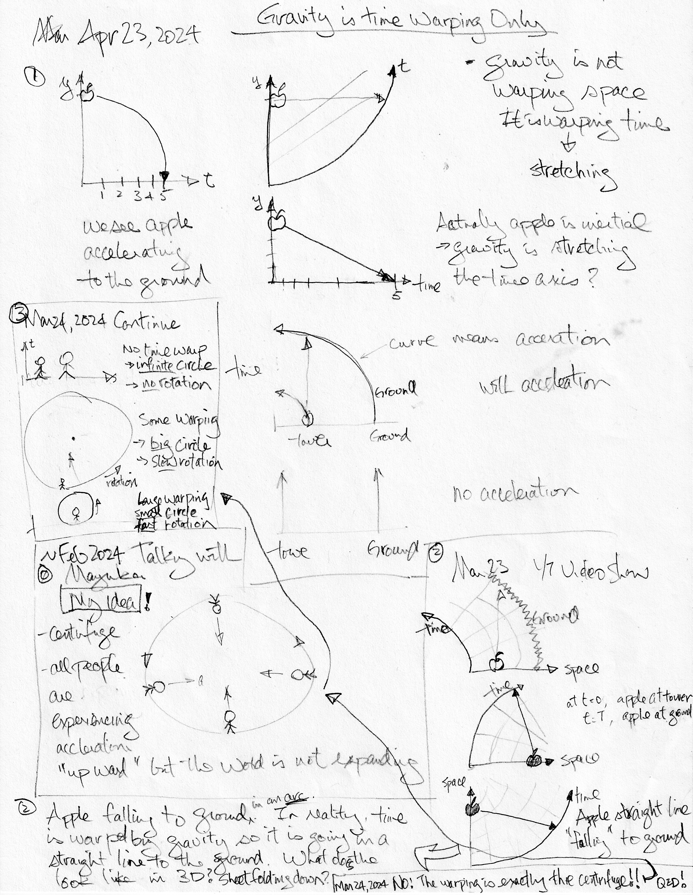

Michael's "Gravity can be Visualized as a Centrifuge" Idea
Gravity is not a force. In reality, we are in a reference frame and the Earth is accelerating upward. But then why is the Earth not expanding out in all directions??
Some new relativity videos with explanations:
So what we call gravity is caused by the Earth wraping time, not space. How about the idea of visualizing "gravity", well time warping as if we were standing on the inside of a large centrifuge? Aha, that's what popped in my head around Feb 2024. That is a much easier visualization to grasp for me, even if it might be inaccurate. Have NOT done any research to see if others have talked about this concept. It is fun to just try to go through my thought-experiment and reinvent the wheel. So:
- Hey, then we are all conceptually "standing" on the inside, not the "outside" surface of the Earth!
- And the Earth is not expanding.
- We all experience acceleration towards the center of the centrifuge, without needing the concept of gravity.
- I can drop an apple, and it will fall to the "ground" and it would feel normal.
- Same, I can throw a ball it would feel normal.
- Basically all the concepts and equivalency of generating "artificial gravity" in a big spinning ring-world, when we dream about live in space.
- In my sketch below, ② marks the time warping diagram shown in FloatHeadPhysics' video. The image below that reverses the space direction so the ground is at zero on the space-axis. Makes more sense to me. The image below that exchanges the speed and time axis. Well then, this warping is essentially a zoomed-in view of the centrifuge in ⓪ and ③. Seems to make sense.
- In ③, if there is no object like the Earth to cause time warping, then the radius of the centrifuge is infinite, and we are in an inertial frame - "normal space".
- In ③, the more massive the planet we are on, the smaller the radius of the centrifuge, and possibly the faster it is spinning. What would be the radius/spin ratio? Could it be one or the other? Does the tangental speed caused by the spin have anything to do with the speed of your inertial frame in Special Relativity?
- Can the space-axis reach the center of the centrifuge? Throw a ball reaching the center? Probably not, as that would be like trying to get to the center of the black-hole. There would probably be more and more space stretching as you get closer and closer.
- All this seems to make sense for an electrical engineer, but it is way out of my league knowing all the relativistic concept and math required.😆
- TBD - time warping & centrifuge animations.
